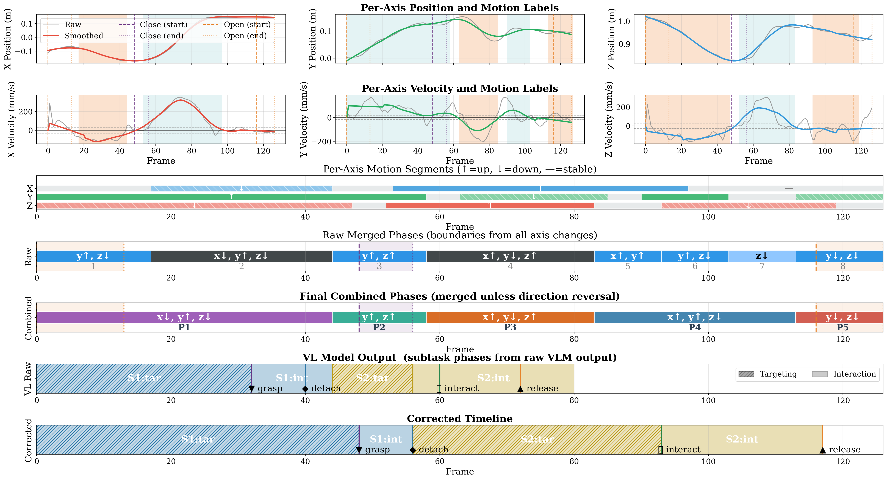
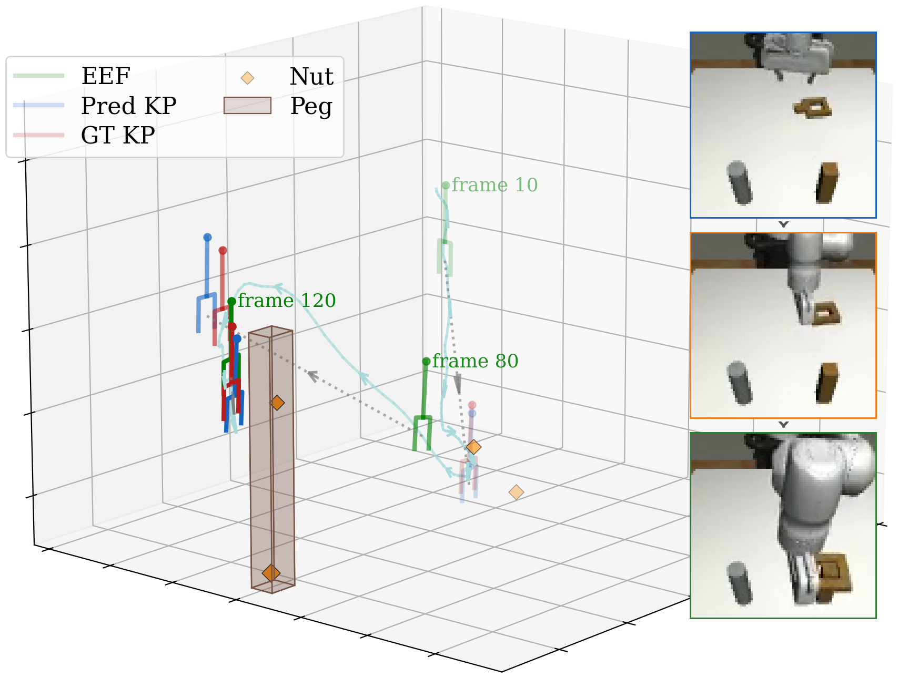
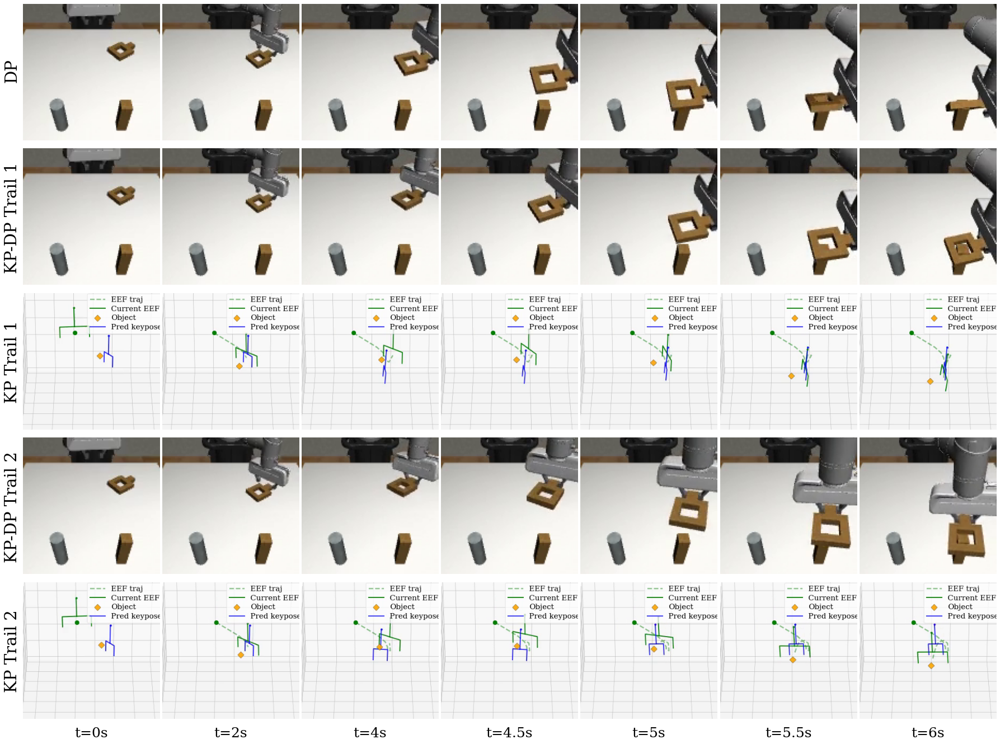

01
VLM subtask analysis
A single representative demonstration is analysed into structured events such as grasp, release, detach, interact, and land.
WhatAutomatic trajectory labelling · keypose guided manipulation
Efficient Automatic Trajectory Labelling and Cross-Embodiment Policy Transfer
School of Computing and Data Science
The University of Hong Kong, HKSAR
An automatic pipeline that lets a vision-language model identify what happens in a demonstration while deterministic trajectory analysis establishes when each key interaction occurs.
arXiv:2606.29028 · Project repository available
Automatic Labelling for Bimanual Mobile Manipulation extends trajectory segmentation and visual reasoning to bimanual mobile demonstrations: Paper ↗, Webpage ↗.
SSC: A Verifiable Structured Representation for Bimanual Manipulation Labelling develops a representation for structured subtasks and consistency checks: Paper ↗.
Overview
Keypose based manipulation decomposes a long horizon task into critical end effector poses that act as subgoals for policy learning.
Extracting those poses is usually tied to hand coded rules or manual annotation. This project separates semantic event recognition from temporal alignment: a vision-language model describes the task workflow once, and trajectory analysis aligns each event with motion and gripper evidence.
The VLM decomposes a demonstration into targeting, interaction, and optional result phases.
Motion and gripper timelines correct frame estimates using physical event signatures.
Keypose guided policies select interaction modes, while reachability filters adapt them to a target robot.
Method
The labelling pipeline is designed for grasp related prehensile manipulation with parallel grippers.
A single representative demonstration is analysed into structured events such as grasp, release, detach, interact, and land.
WhatDouble layer motion segmentation and gripper transitions snap estimated events to precise physical boundaries.
WhenCorrected keypose labels condition a diffusion policy and expose distinct modes in multimodal demonstrations.
How to act
grasp and release follow gripper transitions; detach follows closing and the first lifting motion; interact aligns with the final moving phase before release; and land marks the passive settling of a released object.
The keypose predictor proposes 24 candidates. Candidates are grouped into orientation modes, queried against a reachability map, and filtered before the frozen trajectory policy generates the action.
Keypose representation
At each corrected event frame, the keypose records position, continuous orientation, and gripper configuration.

Experiments
We train on 200 Franka Panda demonstrations from robomimic and evaluate Can and Square on Panda, Kinova3, and UR5e using low dimensional state observations.
A sanity check with one natural grasp direction and fixed placing positions. Keypose conditioning leaves little room to improve an already strong baseline.
Three insertion orientations create distinct demonstration modes. Keyposes make those modes explicit and allow reachability filtering during transfer.
| Task | Method | Panda | Kinova3 | UR5e |
|---|---|---|---|---|
| Can | DP | 0.987 ± 0.014 | 0.911 ± 0.055 | 0.960 ± 0.022 |
| KP | 1.000 | 0.847 ± 0.034 | 0.891 ± 0.028 | |
| KP+Reach | 0.989 ± 0.014 | 0.843 ± 0.025 | 0.913 ± 0.038 | |
| Square | DP | 0.862 ± 0.036 | 0.220 ± 0.045 | 0.738 ± 0.103 |
| KP | 0.842 ± 0.052 | 0.187 ± 0.037 | 0.758 ± 0.055 | |
| KP+Reach | 0.873 ± 0.035 | 0.242 ± 0.042 | 0.829 ± 0.044 |
Qualitative result
On Square with UR5e, different feasible keypose modes produce different insertion directions while the policy remains frozen.

Scope
Keyposes fit grasp, release, and object contact well, but pushing, wiping, pouring, and other continuous-contact behaviours need a broader subtask representation.
The study uses two short simulated tasks, low dimensional states, and a small predictor trained on 200 demonstrations. A large embodiment gap can leave too few reachable candidates.
Long horizon real robot tasks, stronger predictors, and visual policy inputs would test whether the same decomposition scales beyond this feasibility study.
Resources
@article{lu2026Keypose,
title={Keypose Exploration: Efficient Automatic Trajectory Labelling and Cross-Embodiment Policy Transfer},
author={Lu, Yupu and Xu, Hang and Chen, Yizhou and Pan, Jia},
journal={arXiv preprint arXiv:2606.29028},
year={2026}
}